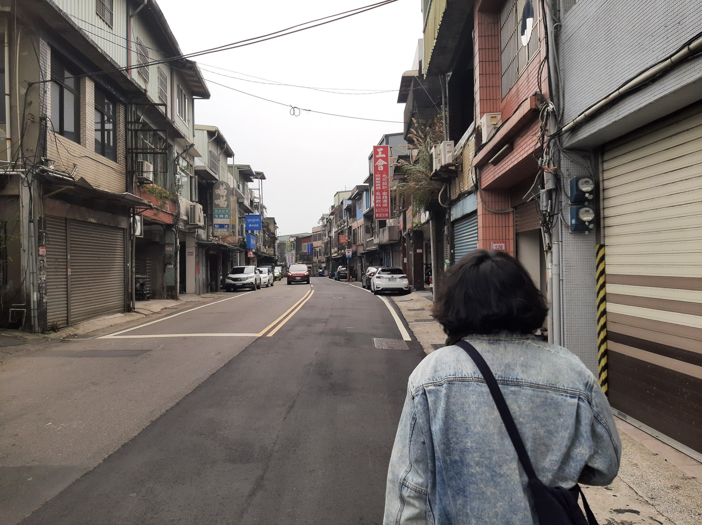
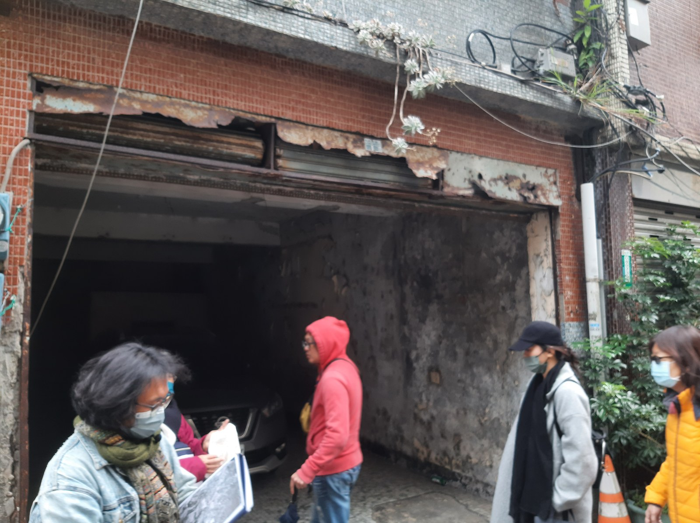
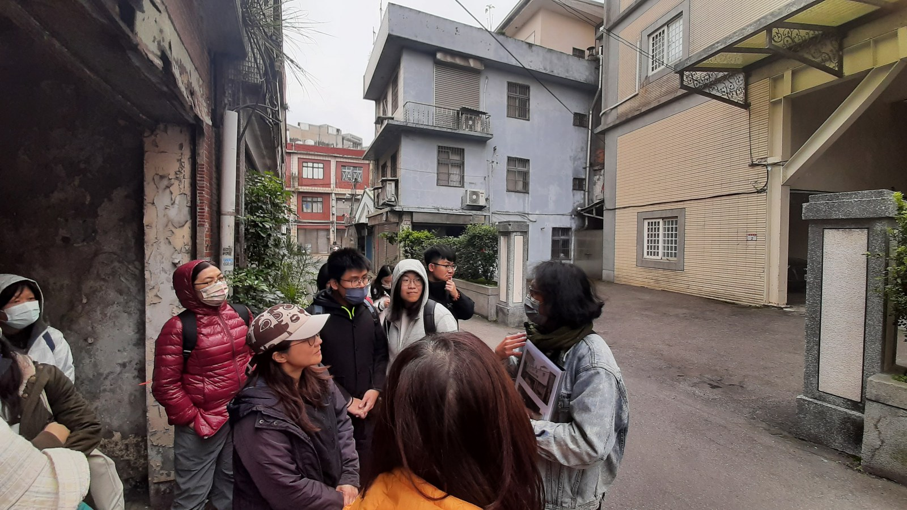
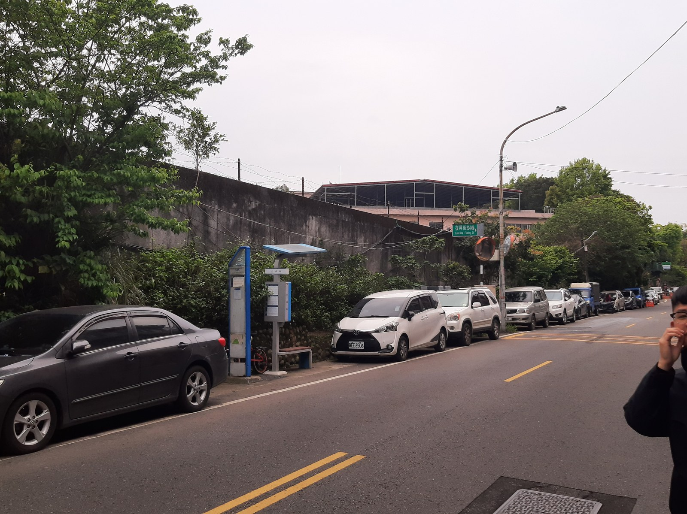
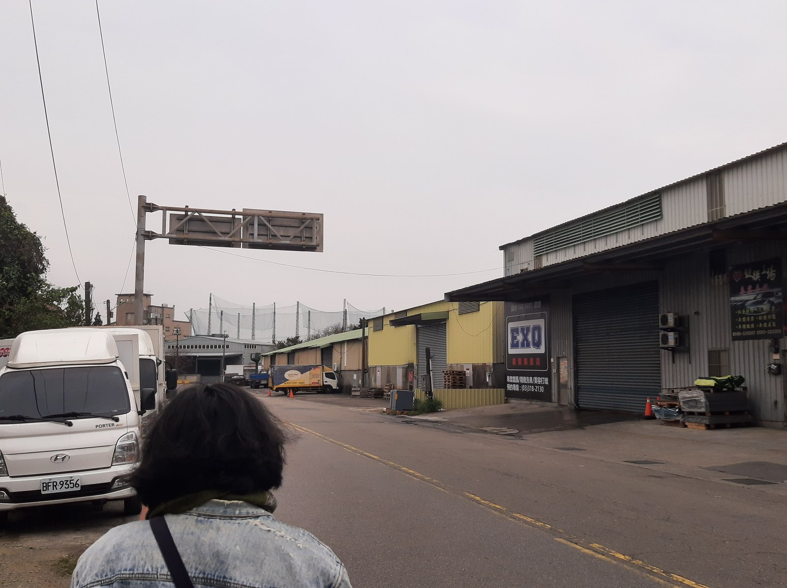
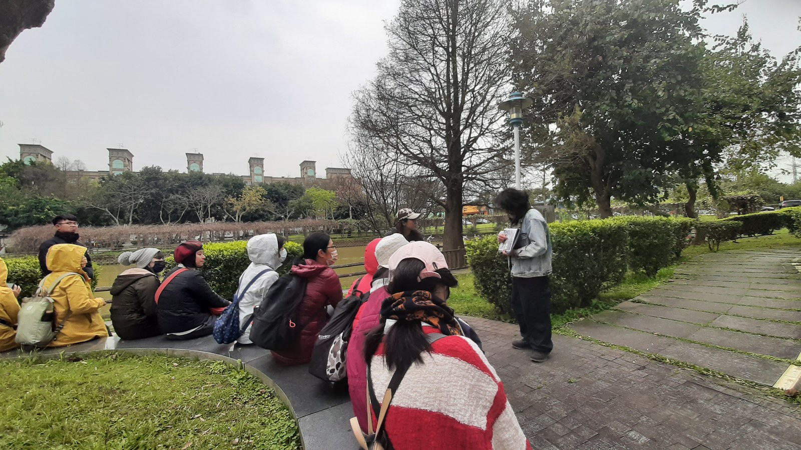
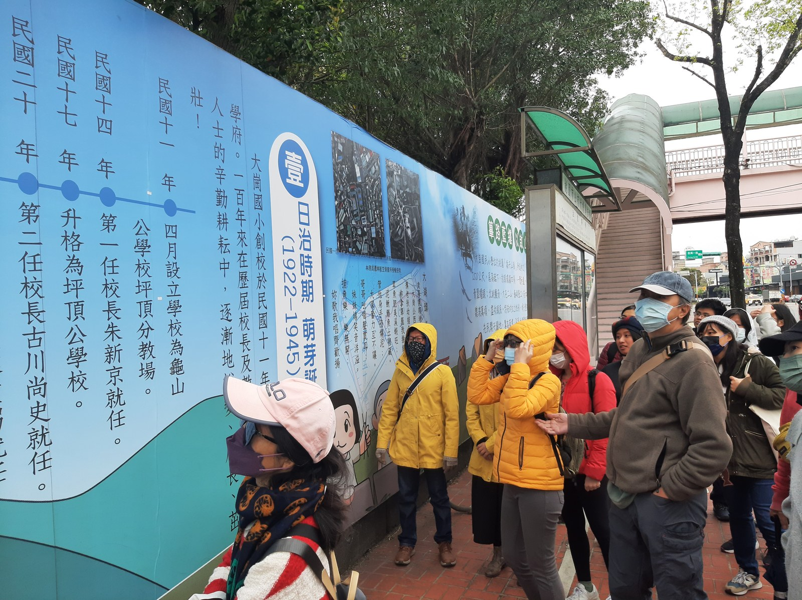
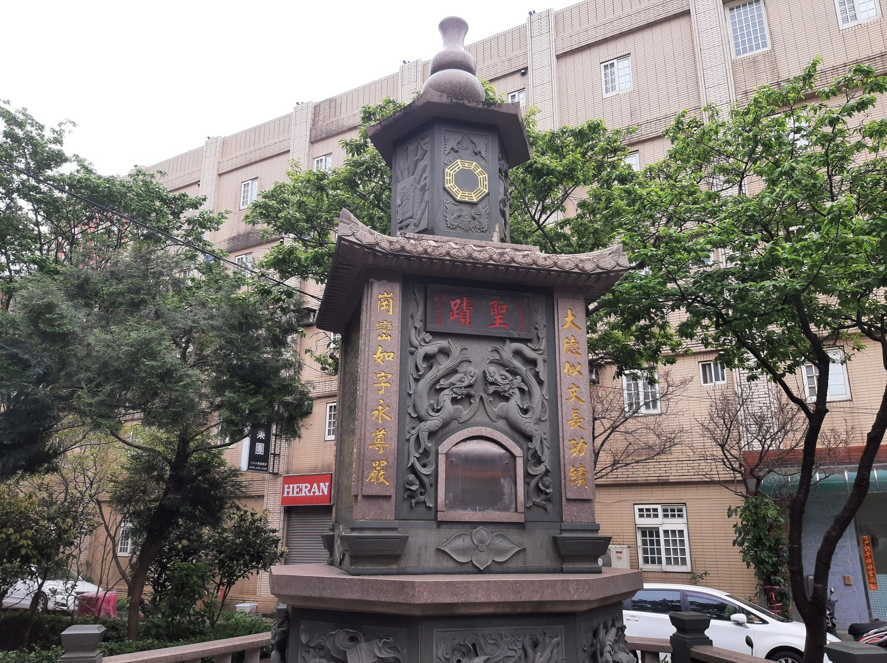
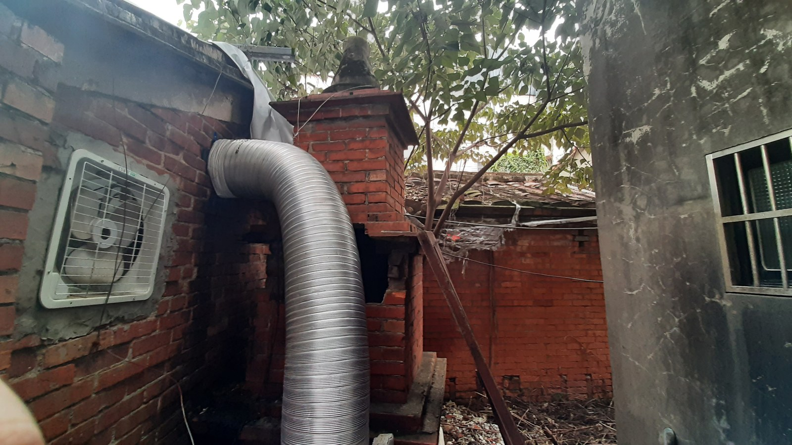
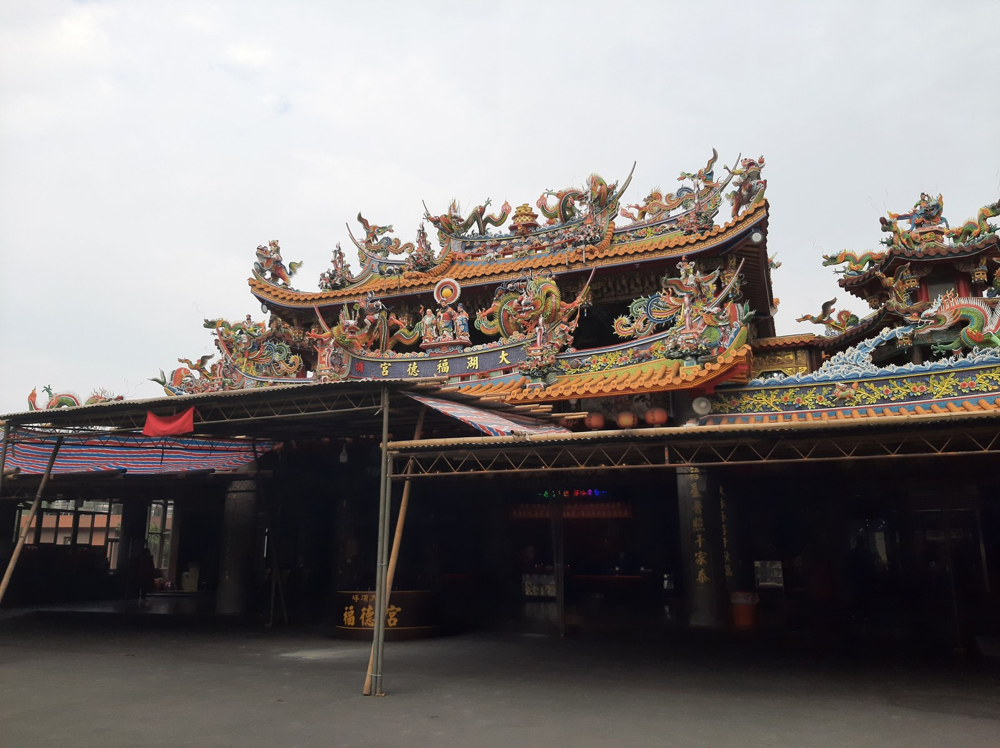

從「龜崙嶺」到「龜山不是島」：總被錯認的台地日常
「坪頂」這個地名十分直白——在台語裡長輩慣稱這裡為「山頂（suann-tíng）」或「坪頂（pînn-tíng）」，指的是龜山區地勢最高、卻又難得平坦開闊的台地。與今日捷運直達、大樓林立的都會印象不同，若把視角拉回整個桃園地圖，會發現龜山其實位在桃園最東北角，境內幾乎全是丘陵山坡，與新北的林口、泰山、新莊、樹林、鶯歌緊密相連。
一隻大龜的傳說，以及「龜崙族」的真實後裔
清代《淡水廳志》曾記載一則地方傳說：淡水河南岸有隻巨龜怪獸在河畔喝水，鄭成功於士林見狀下令部將將其擊殺，巨龜死後化為「龜崙嶺」——正如鶯歌石傳說一樣，都是後人附會的故事（歷史上鄭成功並未北上至中部以北）。更貼近史實的地名來源，其實是早年棲居於此的平埔族群「龜崙族（龜崙社）」。
龜崙社與八德霄裡社、蘆竹南崁社等並稱為「南崁四社」。由於龜崙族漢化極早，傳統服飾與語言早已融入閩南生活圈，但族群記憶仍藏在姓氏密碼裡：凡見姓「永」（永遠的永）、姓「干」（天干地支的干），以及部分姓「柯」、姓「傅」的在地家族（如龜山國小少棒教練、龜山後街老字號「永豐／和豐麵包」家族），許多正是龜崙社的後裔。
至於「龜崙口」為何演變成「龜山」？日本時代總督府慣於將台灣地名雅化或套用日本本土熟悉的地名——如同新竹鹹菜甕因台語讀音近似而改名「關西」，日本三重縣恰有一座「龜山市（Kameyama）」，設有龜山小學與龜山中學，於是原來的龜崙口便定名為「龜山」。地方刊物《龜山不是島》曾做過一次清查，發現全台灣叫「龜山」的地名至少就有八處：從宜蘭龜山島、屏東車城射寮旁龜山、高雄蓮池潭大小龜山，到苗栗龜山大橋與大湖小龜山、新竹山凹處、嘉義梅山吊橋尾端，以及新店龜山發電廠（後改稱桂山發電廠）與楊梅貴山。其中，唯有桃園龜山面積最大、人口也最多。
日本時代報紙記載，龜山庄舉辦家長會因山路崎嶇、交通難行，只能分四區接力連辦四天：坪頂、塔寮坑（迴龍）、南崁頂、新路坑（市區）。
龜山原為 30 里，隨人口移入增為 32 里（新增文青里、楓福里）。文青里從樂善里分出時，便直接取「文化一路」與「青山路」首字命名。
迴龍的連鎖速食與飲料店常掛「新莊龍華／迴龍店」，用 02 電話區碼與台北電網；A8 長庚聚落與體大則常被誤認在林口，形成微妙的地方認同。
許多地標明明座落於桃園龜山境內，卻習慣冠上「林口」之名——例如舉辦大型演唱會的國立體育大學體育館，常被新聞稱為「林口體育館」；疫情期間位於龜山台地的集中檢疫所被稱作「林口檢疫所」，還曾引來林口民意代表急忙澄清「其實在龜山啦」。甚至有些新建案門牌明明登記龜山，銷售話術卻主打「林口生活圈」，道盡台地邊界土地價值與城市認同的角力。
從茶葉到七十座磚窯：桃園僅存八卦窯的興衰
攤開 1973 年（民國 62 年）前後的黑白空拍圖，如今 A7 重劃區滿布的高樓大廈，半世紀前還是一片寬闊紅土與農地。早期坪頂人主要靠種茶維生，這是土地逼出來的選擇——在地有句生動的台語俗諺：「好天釘，雨來黏（hó-thinn tiàm, hōo-lâi liâm）」。紅土只要放晴就硬如釘刺，踩起來扎腳；一旦下雨卻又黏稠泥濘到難以耕作稻米，反倒適合耐旱的茶樹生長。
黑煙往外擠：造就七十座磚窯的紅磚經濟
民國五、六十年代，雙北都會區快速起飛、市區建築需求暴增，但雙北隨即禁止都市內設窯燒磚排煙。於是製磚產業順勢外移，看上龜山豐富的紅土原料與低廉土地，在坪頂、兔子坑與塔寮坑一帶築起窯場。全盛時期大龜山地區多達七十餘座磚窯廠，許多原先種茶的茶農也「斜槓」走進窯場，同時吸引嘉義北上討生活的勞工，以及花東地區的阿美族、泰雅族原住民朋友一個拉一個前來打拚，讓龜山至今仍保有豐富的原住民族群人口。
當時磚頭搶手到什麼程度？老磚窯廠老闆回憶，經濟起飛最狂熱時，工地急著用磚，甚至會有黑道兄弟直接守在窯場大門口「攔貨搶磚」，整批載走以確保建案如期施工。
從手切曬坯到隧道窯：磚窯業的最後轉身
早年八卦窯製磚全靠體力與看天吃飯：泥坯先在場內以細線手工切塊，再運到屋外大廣場日曬，旁邊永遠備著大量帆布，天色一變就得飛奔蓋布——只要磚坯還帶水分就送進窯燒，高溫下立刻爆裂報廢。
如今空污管制與鋼筋、鋼構新工法興起，整個北台灣（北北基桃宜蘭）除了鶯歌尚有一間磚廠，桃園境內僅餘的三間磚窯全在龜山（兩間在迴龍方向、一間在兔坑往鶯歌方向），且都已改採自動化「隧道窯」。這僅存的產業仍面臨嚴峻挑戰：不能隨意開採紅土、外縣市工程土方亦不得輸入，業者一方面試著研發中間開孔的輕量化環保磚，一方面甚至探討以石門水庫清淤淤泥製磚的可能性，讓水庫清淤與傳統磚業共生續命。
至於眼前的這座八卦窯，其實原址與鄰近「第三公墓」外圍曾被劃入 A7 聯外道路工程線內，在文史團體與地方奔走下，2021 年終獲登錄為歷史建築保留下來；而聯外道路究竟改走高架繞道或地下穿越，至今仍是地方持續關注的課題。
長庚聚落、竹林山寺與消失的「樹林口飛行場」
搭乘機場捷運從 A7 體育大學站來到 A9 林口站，短短幾分鐘車程，卻恰好跨越了龜山與林口、農業與軍事、近代與現代的幾條關鍵界線。
長庚買地與龜山、林口的「換地切齊」
民國六十年代，長庚集團從坪頂一路購地至兔坑一帶，孕育出林口長庚醫院、桃園長庚、長庚養生村、長庚大學與長庚科大等龐大園區——這座常被稱作「林口長庚」的醫療重鎮，大本營全數落在龜山區。其中「長庚里」居民幾乎皆為長庚醫護與教職員，社區設有門禁閘門與長庚國小，里內修繕甚至得同時通報區公所與集團。過去高速公路開通後，龜山與林口邊界原本犬牙交錯，地方老鄉長還曾協議彼此「換地」，乾脆直接以高速公路為界將版圖切齊。
十八坪位巡境：竹林山寺如何串起龜山的信仰版圖
山下的龜山有三大傳統信仰中心：嶺頂的壽山巖觀音寺、市區的仁德宮（三界公廟），以及南崁頂居民常前往的南崁五福宮。但對早年路途遙遠的坪頂人來說，林口的竹林山觀音寺才是生活裡真正的依靠。
竹林山寺原名「林口龍山寺」，為免與艋舺龍山寺混淆，遂取「蘆竹、林口、龜山」三地各一字改名。每年廟中「二媽」都會巡迴輪駐昔日祭祀圈的十八（現已擴至二十）個「坪位」駐駕，約每九年便輪值龜山、鶯歌一次（如 2011 年、2020 年皆曾在龜山駐駕）。每逢輪值，在地信眾與店家甚至會騰出店面供奉二媽，香火盛況空前。回顧日本時代皇民化運動推行神道教、曾欲集中焚毀地方神像時，竹林山寺與壽山巖皆機智地以複製品應付繳交，將真正的神尊藏於民宅之中，這才保留下延續至今的百年香火。
藏在重劃區大樓底下的「樹林口飛行場」
林口舊稱「樹林口」。對照 1970 年代空拍圖，今天 A9 林口站周邊、高樓櫛比鱗次的繁華街區，早年曾是一座長條形的軍用機場——日本時代為推動南進政策而興建的「樹林口飛行場」（作為桃園飛行場之外的中繼補給站）。戰後國軍接管改作通訊站並有美軍駐紮，周邊更聚集憲兵、飛彈營與海軍陸戰隊等單位。曾駐紮於此的美國大兵在網路上留下許多老照片，也讓許多老居民的記憶裡，多了一段「美軍俱樂部」與美式娛樂滲入台地日常的獨特年代。
公西老街的「十間戲院」，與種茶改種「鐵觀音」
走下機捷步入公西（「公西」二字取自鄰近的「菜公堂」與「西勢湖」），眼前看似安靜尋常的巷弄與老透天，在 1960 至 1970 年代卻是極為熱鬧的不夜街區。

15:15｜公西聚落街景永樂巷與苓林戲院：前門放映、後門客廳的李家歲月
當時全台 60 多萬軍眷中僅十萬餘戶住進正式眷村，其餘官兵與榮民便在各處營區外自行租屋落腳，加上大量阿兵哥休假消費，使公西的永樂巷一帶瞬間繁盛。撞球間熱鬧到南崁年輕人願意徒步兩小時上山打球；早年台灣人看病多靠掛在家裡的「寄藥包」，在公西卻早早出現了退伍外省軍醫開設的西醫診所；巷弄間更一度聚集了供應軍人娛樂的「軍中樂園」（私娼寮）。
全盛時期，整個龜山區竟多達十間戲院（今日全數歇業）：平地市區有大明、樂宮、大進、奇觀、華寶五間；坪頂一帶除了軍中的中山堂、中正堂，還有玲／苓林（取自舊地名「苦苓林」）、宏生、大湖三大民營戲院。

15:18｜苓林戲院舊址
15:23｜戲院後門・李家宅院曾任龜山鄉長與農田水利會長的李總集家族，幾乎撐起了當年龜山的半壁戲院江山（除了苓林戲院，也投資大湖、樂宮與三峽戲院）。走進戲院後方靜謐的小天井，仍可見屋內保留舊時座椅，而戲院正中後門竟筆直通往李家客廳玄關，成了這段地方娛樂史最生動的一筆。
圍牆內外與時代轉彎：憲兵限高與「鐵觀音」廠房
轉出老街，沿著憲兵訓練中心高聳的灰色圍牆行走，上頭蛇籠依舊。過去因為軍事禁建與限高管制，這一帶始終無法如長庚或 A7 周邊般蓋起摩天住宅，雖然居民曾自嘲有如「次等公民」，卻也意外留住了老街區低矮開闊的天際線。路旁老字號的「真讚羊肉店」一帶，早年則因外省族群聚集，曾有數家專賣「香肉（狗肉）」的店家，還留下街坊打趣「掛羊頭賣狗肉」的時代軼聞。

15:30｜憲兵營區外牆
15:38｜廠房街景這趟產業鏈的轉換，也寫在當地長輩一生的生計裡：最早是清晨撿牛糞、午後採茶葉；五、六十年代改靠磚窯賺取工資；到了近代不再種茶，農地紛紛蓋起鐵皮廠房出租給企業倉儲——地方長輩便自嘲，以前種茶，現在改種「鐵觀音（鐵皮屋）」，從艱苦務農走向收租度日，見證台灣半世紀的經濟變遷。
構樹、靶場小蜜蜂與百年大崗國小
來到大湖紀念公園，先解開許多初訪者的疑問：這座公園其實沒有紀念任何政治事件或名人，純粹是為了留住昔日地名「坪頂大湖」的埤塘記憶而命名。過去這口大湖比今日所見更加遼闊，是台地聚落仰賴灌溉與取水的命脈。

15:44｜大湖紀念公園水岸湖畔一棵「構樹」與靶場邊的「小蜜蜂」童年
公園旁長著台灣極常見的原生植物「構樹」（又名鹿仔樹，因早期常採嫩葉餵鹿），樹皮纖維自古便是優質的造紙原料。構樹分雌雄異株，雄花像毛毛蟲般垂墜，雌株則結出一顆顆鮮紅多汁的球形果實，能熬成果醬，成熟落果常把公園路面染成一片紅點。
坐在湖畔談起上一代的台地童年，故事卻一點也不悠閒。1960 年代住在大崗靶場邊的孩童（民國 50 年代初出生的一輩），家中田地緊貼著軍隊靶場，流彈偶爾直接打進菜園。孩子們下課後常趁機鑽進靶場撿拾遺落彈殼變賣貼補家用；甚至騎著腳踏車當起「小蜜蜂」，冒險騎進碉堡或靶場邊向阿兵哥兜售食物，有時還得騎遠路到虎頭山環保公園附近的電影外景片場，賣點心給劇組人員。
有趣的是，同一代人若住在僅二十分鐘車程外的桃園大廟（景福宮）後方市區，童年記憶卻是理髮廳姐姐帶著去戲院看片、去冰果室吃冰——短短二十分鐘的坡度差距，在當年幾乎是兩個截然不同的世界。

16:03｜大崗國小外牆校史沿復興一路續行，路過創立於 1922 年的大崗國小與坪頂唯一一所公立國中大崗國中（由文昌國中分出），街對面則是四代傳承、以古法榨製苦茶油聞名的「文化茶農場」，靜靜守著台地最後一抹農村手藝。
北桃園的客家印記：1935 聖蹟亭與坪頂大湖福德宮
走讀的壓軸，是氣勢恢宏、規模僅次於屏東車城福安宮的坪頂大湖福德宮。在廟埕左前方，矗立著一座雕刻精美的石造「聖蹟亭」，正面匾額刻著「聖蹟」二字，並留有「昭和十年（1935 年）」的歷史落款。
「南客北閩」之外的龜山詔安客
桃園常被簡化為「南客北閩」——南桃園講客語、北桃園講台語，但龜山卻處處藏著打破刻板印象的線索。聖蹟亭（敬字亭）正是台灣客家聚落極具代表性的文化建築：先民敬惜文字，凡帶字紙張絕不隨意丟棄，必彙集於亭中焚化，待特定時節再舉行「送聖蹟」儀式將紙灰送入溪流大海。
不僅於此，龜山過往亦保有數座聖蹟亭記錄（如早年壽山巖一帶亦曾有敬字亭，至今全桃園留存下來的聖蹟亭多位於中壢、龍潭、大溪與蘆竹五福宮等地，龜山即占其一）。加上地方口述與家族記憶顯示，早年開墾龜山的漢人中，實有大批來自福建詔安的客家人（「詔安客」）。因周邊閩南語人口佔多數，許多後代漸趨「福佬化」而不再會說詔安客語，但老輩至今仍清楚交代家訓：「我們是詔安人（kheh-lâng），不是閩南人。」這座 1935 年立下的聖蹟亭，便成了北桃園罕見的客家拓墾鐵證。

16:08｜福德宮前重建聖蹟亭
16:20｜巷底 1935 年原座紅磚古亭最令走讀隊伍屏息的一幕，發生在轉進「可莉快炒店」旁的極窄小巷之後：原來福德宮前那座雕工華麗的石亭是 2000 年廟方為紀念而重建的複刻亭；真正建於 1935 年（龜山庄坪頂大湖時期）的紅磚原座聖蹟亭，依然靜靜立在店家後方的狹窄巷弄裡。斑駁紅磚塔頂端還完整留著錐形寶頂，一旁卻被餐廳的外牆與銀色排煙風管緊緊包夾——近九十年的地方文化史與當代庶民煙火，就這樣在幾十公分的防火巷裡安靜共存。

16:24｜坪頂大湖福德宮從清代龜崙社、1922 年的坪頂分教場、1935 年的紅磚聖蹟亭、1960 年代吐煙的八卦窯與軍營戲院，到今日高樓林立的 A7、A8 捷運生活圈，龜山坪頂從來不是地圖上空白的邊緣地帶。而在紅磚與高樓的縫隙之間，依然有桃園在地青年與小農持續行動——從文史保存、地方刊物《龜山不是島》，到楓樹坑推動友善農業與食農教育的「三三三市集」（象徵龜山的「三個山」），這片紅土台地的故事，正繼續被細心書寫下去。